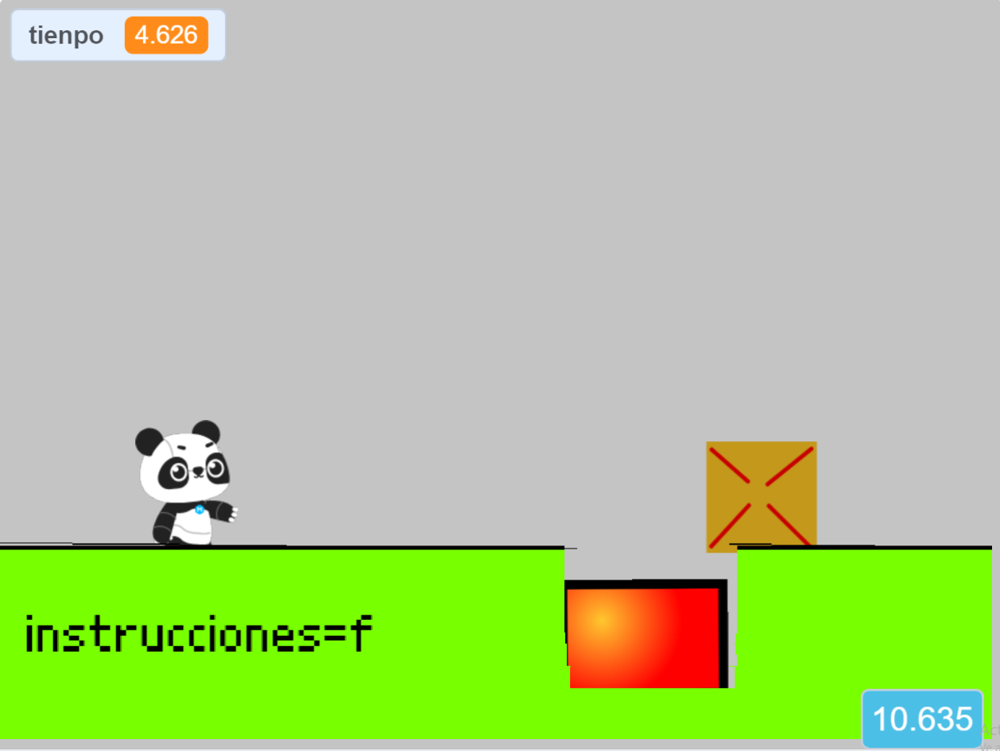

hola soy juani estos son los travagos y prollectos y una aclaracion mis prollectos no estan terminados o solo son bases para juego
robot E6
Este es un robot que está inspirado en una pila. Fue echo en tintercaty, es un pequeño trabajo terminado y creado para ser un llavero. Gracias al profre que me dejo imprimirlo.
puzzleclon
Este es un juego que fue creado para un trabajo práctico del curso y a decir verdad parece un juego de anuncio, es demasiado corto y la función de clonar es inutil pero este trabajo es uno de los primeros y yo todavía estaba aprendiendo
repo vercion scrach
Es una base para una version de vista desde los aires para el juego grupal r.e.p.o que no tiene enemigos ni cambios de escena. El proyecto que tengo el mi computadora no es una version avanzada, esta está en el salon de computación del cole. Una de las caracteristicas es que podes mover objetos y colocarlos en un lugar para mostrar cuanto valen y mueve la boca cuando suena algo fuerte

Esto es un poco monotono ¿no? te voy a hacer un chiste: habia dos ovejas en un partido de football y se va la pelota. La primera oveja dice bee y la otra dice ve tu. Solo lo hice para que no todo sea igual
ok sigamos
supercat
Es un trabajo del cole que trata de que sos un gato que vuela, tenes que atrapar a otros gatos y evitar las bombas. Tiene dos escenarios.